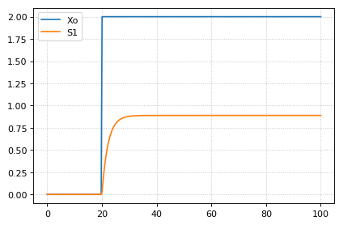
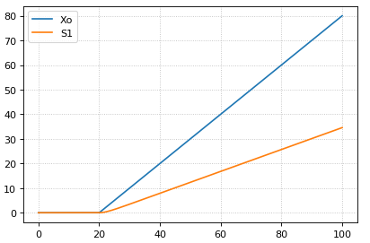
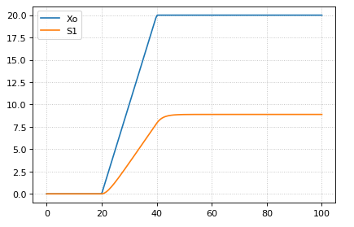
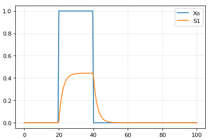
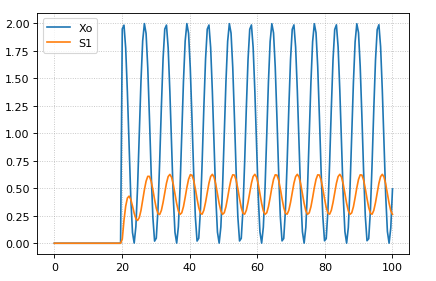

Different authoring tools have different ways of allowing the user to build models, and these approaches have individual advantages and disadvantages. In Antimony (and in Tellurium, which uses it), the main approach to building models is to use a human-readable, text-based definition language, designed to interconvert between the SBML standard and a shorthand form that allows editing without the structure and overhead of working with XML directly. This guide will show you the intricacies of working with Antimony. More information can be found at https://github.com/sys-bio/antimony/.
Since the advent of SBML (the Systems Biology Markup Language) computer models of biological systems have been able to be transferred easily between different labs and different computer programs without loss of specificity. But SBML was not designed to be readable or writable by humans, only by computer programs, so other programs have sprung up to allow users to more easily create the models they need.
Many of these programs are GUI-based, and allow drag-and-drop editing of species and reactions, such as CellDesigner. A few, like Jarnac, take a text-based approach, and allow the creation of models in a text editor. This has the advantage of being usable in an automated setting, such as generating models from a template metalanguage (TemplateSB is such a metalanguage for Antimony) and readable by others without translation. Antimony (so named because the chemical symbol of the element is ‘Sb’) was designed as a successor to Jarnac’s model definition language, with some new features that mesh with newer elements of SBML, some new features we feel will be generally applicable, and some new features that are designed to aid the creation of genetic networks specifically. Antimony is available as a library and a Python package.
Antimony is the main method of building models in Tellurium, and can be used in other contexts as well. Its main features include:
The 3.2 release cleaned up the build system, increased efficiency, and fixed numerous bugs, mostly discovered through converting SBML Test Suite models to Antimony and back to SBML, and ensuring that a simulation of the round-tripped model matched a simulation of the original model. The entirety of the SBML Test Suite (with the exception of ‘fast’ reactions, now deprecated in SBML) now successfully round-trip through Antimony without loss of information (though some things may change structurally for hierarchical models).
The 3.1 release changed FBC support to version 3 of that package, changing how FBC constraints were translated to SBML (but not changing how they were declared in Antimony), and adding support for gene products, gene product associations, species charges, and species chemical formulas.
In addition, ‘substanceOnly’ species are now initialized to their SBML ‘initialAmount’, so as to always have substance units.
The 3.0 release allows import and export of the SBML packages ‘Layout’ and ‘Render’, using the SBMLNetwork library to do so.
The 2.15 release changed SBML import so that function definitions are (by default) now dropped and automatically incorporated into the model instead.
The 2.14.0 release added the ability to encode algebraic rules, and added ways to add annotations and notes to objects and the model.
The 2.13.4 release changed the default SBML output to L3v2, and added basic unit names as reserved words for better import.
The 2.13.3 release removed the ‘@’ for parsing events, and fixed ‘-o’ interaction parsing.
The 2.13.2 release changed some maintenance features.
The 2.13.1 release added named stoichiometries, the ‘rateOf’ function, and instituted case senstitivity for predefined elements.
The 2.12 release added the ability to save extra ‘annotation-like’ elements from the ‘distributions’ SBML package, and fixed numerous bugs in cvterm/SBOterm setting.
The 2.11 release quashed all known memory leaks, and added the ability to define synthesis reactions with no id (i.e. ’ -> S1; k1’)
The 2.10 release updated support for distributions to the latest SBML release of that package, updated the default version of SBML to Level 3 version 2, added support for setting cvterms and the SBOterm,
The 2.9.1 release added the ability to convert to SBML Level 3 version 2, and SBML Level 2 version 5.
The 2.9.0 release of Antimony was largely a maintenance release: numerous bugs were fixed, and installation was streamlined, particularly for Python and conda.
The 2.8.0 release of Antimony included support for the SBML ‘Flux Balance Constraints’ package (version 1), as well as constraints in general.
In the 2.7.1 release of Antimony, species marked ‘hasOnlySubstanceUnits=true’ in SBML now have a corresponding definition in Antimony: ‘species substanceOnly S1, S2’.
In the 2.7 release of Antimony, QTAntimony got several new improvements, including displayed line numbers, find/replace, and a ‘go to line’ option. A few new syntaxes were also added, including the ability to concisely define elements plus their assignment rules (‘species S1 in C := 3+p’), and to define submodules with implied parameters (‘A: mod1(1,2)’).
In the 2.6 release of Antimony, some features of hierarchical translation (deletions in particular) were made more robust, and a number of built-in distribution functions were added, which are translated to SBML using the ‘distributions’ package, as well as using custom annotations
In the 2.5 release of Antimony, translation of Antimony concepts to and from the Hierarchical Model Composition package was developed further to be much more robust, and a new test system was added to ensure that Antimony’s ‘flattening’ routine (which exports plain SBML) matches libSBML’s flattening routine.
In the 2.4 release of Antimony, use of the Hierarchical Model Composition package constructs in the SBML translation became standard, due to the package being fully accepted by the SBML community.
In the 2.2/2.3 release of Antimony, units, conversion factors, and deletions were added.
In the 2.1 version of Antimony, the ‘import’ handling became much more robust, and it became additionally possible to export hierarchical models using the Hierarchical Model Composition package constructs for SBML level 3.
In the 2.0 version of Antimony, it became possible to export models as CellML. This requires the use of the CellML API, which is now available as an SDK. Hierarchical models are exported using CellML’s hierarchy, translated to accommodate their ‘black box’ requirements.
Creating a model in Antimony is designed to be very straightforward and simple. Model elements are created and defined in text, with a simple syntax.
The most common way to use Antimony is to create a reaction network,
where processes are defined wherein some elements are consumed and other
elements are created. Using the language of SBML, the processes are
called ‘reactions’ and the elements are called ‘species’, but any set of
processes and elements may be modeled in this way. The syntax for
defining a reaction in Antimony is to list the species being consumed,
separated by a +, followed by an arrow ->,
followed by another list of species being created, followed by a
semicolon. If this reaction has a defined mathematical rate at which
this happens, that rate can be listed next:
S1 -> S2; k1*S1The above model defines a reaction where S1 is converted
to S2 at a rate of ‘k1*S1’.
This model cannot be simulated, however, because a simulator would not know what the conditions are to start the simulation. These values can be set by using an equals sign: cillator:
S1 -> S2; k1*S1
S1 = 10
S2 = 0
k1 = 0.1The above, then, is a complete model that can be simulated by any software that understands SBML (to which Antimony models can be converted).
If you want to give your model a name, you can do that by wrapping it
with the text: model [name] [reactions, etc.] end:
# Simple UniUni reaction with first-order mass-action kinetics
model example1
S1 -> S2; k1*S1
S1 = 10
S2 = 0
k1 = 0.1
endIn subsequent examples in this tutorial, we’ll be using this syntax to name the examples, but for simple models, the name is optional. Later, when we discuss submodels, this will become more important.
There are many more complicated options in Antimony, but the above has enough power to define a wide variety of models, such as this oscillator:
model oscli
#Reactions:
J0: -> S1; J0_v0
J1: S1 -> ; J1_k3*S1
J2: S1 -> S2; (J2_k1*S1 - J2_k2*S2)*(1 + J2_c*S2^J2_q)
J3: S2 -> ; J3_k2*S2
# Species initializations:
S1 = 0
S2 = 1
# Variable initializations:
J0_v0 = 8
J1_k3 = 0
J2_k1 = 1
J2_k2 = 0
J2_c = 1
J2_q = 3
J3_k2 = 5
endSingle-line comments in Antimony can be created using the
# or // symbols, and multi-line comments can
be created by surrounding them with /* [comments] */.
/* This is an example of a multi-line
comment for this tutorial */
model example2
J0: S1 -> S2 + S3; k1*S1 #Mass-action kinetics
S1 = 10 #The initial concentration of S1
S2 = 0 #The initial concentration of S2
S3 = 3 #The initial concentration of S3
k1 = 0.1 #The value of the kinetic parameter from J0.
endThe names of the reaction and the model are saved in SBML, but any comments are not.
Reactions can be created with multiple reactants and/or products, and the stoichiometries can be set by adding a number before the name of the species:
# Production of S1
-> S1; k0
# Conversion from S1 to S2
S1 -> S2; k1*S1
# S3 is the adduct of S1 and S2
S1 + S2 -> S3; k2*S1*S2
# Dimerization of S1
2 S1 -> S2; k3*S1*S1
# More complex stoichiometry
S1 + 2 S2 -> 3 S3 + 5 S4; k4*S1*S2*S2
# Degradation of S4
S4 -> ; k5*S4Reactions can be defined with a wide variety of rate laws
model pathway()
# Examples of different rate laws and initialization
S1 -> S2; k1*S1
S2 -> S3; k2*S2 - k3*S3
S3 -> S4; Vm*S3/(Km + S3)
S4 -> S5; Vm*S4^n/(Km + S4)^n
S1 = 10
S2 = 0
S3 = 0
S4 = 0
S5 = 0
k1 = 0.1
k2 = 0.2
k3 = 0.2
Vm = 6.7
Km = 1E-3
n = 4
endBy default, any named element in an Antimony model is translated as an SBML ‘parameter’. If it is used in a reaction, it is translated as a species. If one element is ‘in’ a second element, the second element becomes a compartment.
However, it is possible to define any element as a species or compartment directly when they do not appear in those contexts:
p = 3
species s = 4
compartment c = 5If, for example, a species is changing due to a rate rule and does not appear in a reaction, you must declare it to be a species:
species S1 = 1.3
S1' = 0.4Boundary species are those species which are unaffected by the model. Usually this means they are fixed. There are two ways to declare boundary species.
model pathway()
# Example of using $ to fix species
$S1 -> S2; k1*S1
S2 -> S3; k2*S2
S3 -> $S4; k3*S3
k1 = 0.1; k2 = 0.3; k3 = 0.15
S1 = 10
endmodel pathway()
# Examples of using the const keyword to fix species
const S1, S4
S1 -> S2; k1*S1
S2 -> S3; k2*S2
S3 -> S4; k3*S3
k1 = 0.1; k2 = 0.3; k3 = 0.15
S1 = 10
endFor multi-compartment models, or models where the compartment size
changes over time, you can define the compartments in Antimony by using
the compartment keyword, and designate species as being in
particular compartments with the in keyword:
model pathway()
# Examples of different compartments
compartment cytoplasm = 1.5, mitochondria = 2.6
const S1 in mitochondria
var S2 in cytoplasm
var S3 in cytoplasm
const S4 in cytoplasm
S1 -> S2; k1*S1*mitochondria
S2 -> S3; k2*S2*cytoplasm
S3 -> S4; k3*S3*cytoplasm
k1 = 0.1; k2 = 0.3; k3 = 0.15
S1 = 10
endNote that reaction rates must be in units of amount/time, so since species are expressed in terms of concentration by default, they should be multiplied by their compartment volumes to make the units work out.
You can also initialize elements with more complicated formulas than simple numbers:
model pathway()
# Examples of different assignments
A = 1.2
k1 = 2.3 + A
k2 = sin(0.5)
k3 = k2/k1
S1 -> S2; k1*S1
S2 -> S3; k2*S2
S3 -> S4; k3*S3
S1 = 10
endIf you want to define some elements as changing in time, you can
either define the formula a variable equals at all points in time with a
:=, or you can define how a variable changes in time using
X' (a rate
rule) in which case you’ll also need to define its initial starting
value. The keyword time represents time.
model pathway()
# Examples of assignments that change in time
k1 := sin(time) # k1 will always equal the sine of time
k2 = 0.2
k2' = k1 #' k2 starts at 0.2, and changes according to the value
# of k1: d(k2)/dt = k1
S1 -> S2; k1*S1
S2 -> S3; k2*S2
S1 = 10
endYou can use piecewise to define piecewise
assignments.
model pathway()
# Examples of piecewise assignments
$Xo -> S1; k1*Xo;
S1 -> S2; k2*S1;
S2 -> $X1; k3*S2;
k1 := piecewise(0.1, time > 50, 20)
k2 = 0.45; k3 = 0.34; Xo = 5;
endThe above will return k1 = 0.1 if
time > 50 and 20 otherwise. A more
complicated piecewise assignment can be defined as well.
model pathway()
$Xo -> S1; k1*Xo;
S1 -> S2; k2*S1;
S2 -> $X1; k3*S2;
k1 := piecewise(5, time > 20, 8, S2 < 100, 15)
k2 = 0.45; k3 = 0.34; Xo = 5;
endThe above piecewise call will return 5 if time > 20, else it will return 8 if S2 < 100, else it will return 15. The piecewise function has this general “do this if this is true, else …” pattern, and can be extended to include as may conditions as needed.
Events are discontinuities in model simulations that change the
definitions of one or more symbols at the moment when certain conditions
apply. The condition is expressed as a boolean formula, and the
definition changes are expressed as assignments, using the keyword
at:
at (x>5): y=3, x=r+2In a model with this event, at any moment when x transitions from being less than or equal to 5 to being greater to five, y will be assigned the value of 3, and x will be assigned the value of r+2, using whatever value r has at that moment. The following model sees the conversion of S1 to S2 until a threshold is reached, at which point the cycle is reset.
model reset()
S1 -> S2; k1*S1
E1: at (S2>9): S2=0, S1=10
S1 = 10
S2 = 0
k1 = 0.5
endFor more advanced usage of events, see below.
You may create user-defined functions in a similar fashion to the way you create modules, and then use these functions in Antimony equations. These functions must be basic single equations, and act in a similar manner to macro expansions. As an example, you might define the quadratic equation and use it in a later equation as follows:
function quadratic(x, a, b, c)
a*x^2 + b*x + c
end
model quad1
S3 := quadratic(s1, k1, k2, k3);
s1 = 5; k1=0.3; k2=42; k3=10
endThis effectively defines S3 to always equal the equation
k1*s1^2 + k2*s1 + k3.
Antimony elements can be annotated with URNs using annotation keywords You can see the full list below, but in general, you annotate in the following way:
//Species
species Glcin in comp, MgATP in comp
// CV terms:
comp identity "http://identifiers.org/go/GO:0005737"
Glcin identity "http://identifiers.org/chebi/CHEBI:17234",
"http://identifiers.org/kegg.compound/C00293"
MgATP part "http://identifiers.org/chebi/CHEBI:25107",
"http://identifiers.org/chebi/CHEBI:15422"Any Antimony element with an id may be annotated in this way, including the model itself. Inside a model definition, the model itself may be annotated using the ‘model’ keyword:
model foo()
model model_entity_is "http://identifiers.org/biomodels.db/BIOMD0000000004"
model description "http://identifiers.org/pubmed/1833774"
model origin "http://identifiers.org/biomodels.db/BIOMD0000000003"
model taxon "http://identifiers.org/taxonomy/8292"
model created "2005-02-08T17:34:02Z"
model modified "2012-12-11T15:30:15Z"
endYou can also define an element’s ‘notes’, using the ‘notes’ keyword. If the notes take more than one line, you can group them together using three tick marks ``` :
model notes ```
This model represents the inactive forms of CDC-2 Kinase and Cyclin
Protease as separate species, unlike the ODEs in the published paper, in
which the equations for the inactive forms are substituted into the
equations for the active forms using a mass conservation rule
M+MI=1,X+XI=1. Mass is still conserved in this model through the
explicit reactions M<->MI and X<->XI. The terms in the
kinetic laws are identical to the corresponding terms in the kinetic
laws in the published paper.
```Antimony was actually originally designed to allow the modular creation of models, and has a basic syntax set up to do so. For a full discussion of Antimony modularity, see below, but at the most basic level, you define a re-usable module with the ‘model’ syntax, followed by parentheses where you define the elements you wish to expose, then import it by using the model’s name, and the local variables you want to connect to that module
# This creates a model 'side_reaction', exposing the variables 'S' and 'k1':
model side_reaction(S, k1)
J0: S + E -> ES; k1*k2*S*E - k2*ES;
E = 3;
ES = E+S;
k2 = 0.4;
end
# In this model, 'side_reaction' is imported twice:
model full_pathway
-> S1; k1
S1 -> S2; k2*S1
S2 -> ; k3*S2
A: side_reaction(S1, k4)
B: side_reaction(S2, k5)
S1 = 0
S2 = 0
k1 = 0.3
k2 = 2.3
k3 = 3.5
k4 = 0.0004
k5 = 1
endIn this model, A is a submodel that creates a
side-reaction of S1 with A.E and
A.ES, and B is a submodel that creates a
side-reaction of S2 with B.E and
B.ES. It is important to note that there is no connection
between A.E and B.E (nor A.ES and
B.ES): they are completely different species in the
model.
More than one file may be used to define a set of modules in Antimony through the use of the ‘import’ keyword. At any point in the file outside of a module definition, use the word ‘import’ followed by the name of the file in quotation marks, and Antimony will include the modules defined in that file as if they had been cut and pasted into your file at that point. SBML files may also be included in this way:
import "models1.txt"
import "oscli.xml"
model mod2()
A: mod1();
B: oscli();
endIn this example, the file models1.txt is an Antimony
file that defines the module mod1, and the file
oscli.xml is an SBML file that defines a model named
oscli. The Antimony module mod2 may then use
modules from either or both of the other imported files.
Signals can be generated by combining assignment rules with events.
The simplest signal is input step. The following code implements a step that occurs at time = 20 with a magnitude of f. A trigger is used to set a trigger variable alpha which is used to initate the step input in an assignment expression.
$Xo -> S1; k1*Xo;
S1 -> $X1; k2*S1;
k1 = 0.2; k2 = 0.45;
alpha = 0; f = 2
Xo := alpha*f
at time > 20:
alpha = 1
The following code starts a ramp at 20 time units by setting the p1 variable to one. This variable is used to acticate a ramp function.
$Xo -> S1; k1*Xo;
S1 -> $X1; k2*S1;
k1 = 0.2; k2 = 0.45;
p1 = 0;
Xo := p1*(time - 20)
at time > 20:
p1 = 1
The following code starts a ramp at 20 time units by setting the p1 variable to one and then stopping the ramp 20 time units later. At 20 time units later a new term is switched on which subtract the ramp slope that results in a horizontal line.
$Xo -> S1; k1*Xo;
S1 -> $X1; k2*S1;
k1 = 0.2; k2 = 0.45;
p1 = 0; p2 = 0
Xo := p1*(time - 20) - p2*(time - 40)
at time > 20:
p1 = 1
at time > 40:
p2 = 1
The following code starts a pulse at 20 time units by setting the p1 variable to one and then stops the pulse 20 time units later by setting p2 equal to zero.
$Xo -> S1; k1*Xo;
S1 -> $X1; k2*S1;
k1 = 0.2; k2 = 0.45;
p1 = 0; p2 = 1
Xo := p1*p2
at time > 20:
p1 = 1
at time > 40:
p2 = 0
The following code starts a sinusoidal input at 20 time units by setting the p1 variable to one.
$Xo -> S1; k1*Xo;
S1 -> $X1; k2*S1;
k1 = 0.2; k2 = 0.45;
p1 = 0;
Xo := p1*(sin (time) + 1)
at time > 20:
p1 = 1
The simplest Antimony file may simply have a list of reactions
containing species, along with some initializations. Reactions are
written as two lists of species, separated by a ->, and
followed by a semicolon:
S1 + E -> ES;Optionally, you may provide a reaction rate for the reaction by including a mathematical expression after the semicolon, followed by another semicolon:
S1 + E -> ES; k1*k2*S1*E - k2*ES;You may also give the reaction a name by prepending the name followed by a colon:
J0: S1 + E -> ES; k1*k2*S1*E - k2*ES;The same effect can be achieved by setting the reaction rate
separately, by assigning the reaction rate to the reaction name with an
=:
J0: S1 + E -> ES;
J0 = k1*k2*S1*E - k2*ES;You may even define them in the opposite order-they are all ways of saying the same thing.
If you want, you can define a reaction to be irreversible by using
=> instead of ->:
J0: S1 + E => ES;However, if you additionally provide a reaction rate, that rate is not checked to ensure that it is compatible with an irreversible reaction.
At this point, Antimony will make several assumptions about your model. It will assume (and require) that all symbols that appear in the reaction itself are species. Any symbol that appears elsewhere that is not used or defined as a species is ‘undefined’; ‘undefined’ symbols may later be declared or used as species or as ‘formulas’, Antimony’s term for constants and packaged equations like SBML’s assignment rules. In the above example, k1 and k2 are (thus far) undefined symbols, which may be assigned straightforwardly:
J0: S1 + E -> ES; k1*k2*S1*E - k2*ES;
k1 = 3;
k2 = 1.4;More complicated expressions are also allowed, as are the creation of symbols which exist only to simplify or clarify other expressions:
pH = 7;
k3 = -log10(pH);The initial concentrations of species are defined in exactly the same way as formulas, and may be just as complex (or simple):
S1 = 2;
E = 3;
ES = S1 + E;Order for any of the above (and in general in Antimony) does not matter at all: you may use a symbol before defining it, or define it before using it. As long as you do not use the same symbol in an incompatible context (such as using the same name as a reaction and a species), your resulting model will still be valid. Antimony files written by libAntimony will adhere to a standard format of defining symbols, but this is not required.
In SBML, species can be defined such that when their ID is used in math, that symbol means either ‘the concentration of the species’ or ‘the amount of the species’. In Antimony, by default, a species symbol is defined as meaning its concentration. However, it can be defined to mean the amount by using the ‘substanceOnly’ keyword:
substanceOnly species S1;
Now, whenever ‘S1’ is used in the model, it is a reference to the species amount, and not its concentration. Defining an initial amount is also changed:
S1 = 2.5;This will set the initial amount to 2.5, not the initial concentration. If you wish to set the initial concentration instead, use the compartment:
S1 = 3.1*CBecause a concentration times the compartment volume yields an amount, in this formulation, ‘3.1’ is set as the initial concentration.
A stoichiometry in a reaction may be given an ID instead of a number, and that ID may be set later:
J0: n A -> B; k1*A^n
n = 3The id of the stoichiometry may now be changed by other model constructs: events, rate rules, and assignment rules may all use the value as a target:
J0: n A -> m B; k1*A^n
n := time/3
m = 1
at A < 3: m = 2This also gives the stoichiometry an ID that can be given a value directly (or be tracked) by some simulators (such as roadrunner).
If you want to use the same ID for multiple stoichiometries, this can be done straightforwardly:
J0: n A -> n B; k1*A^n
n = 3However! When translated to SBML, every stoichiometry must have a unique ID. Therefore, an assignment rule will be created to set the value of B’s stoichiometry to ‘n’. Effectively, the model will become:
J0: n A -> J0_B_stoich B; k1*A^n
n = 3
J0_B_stoich := nThis is mathematically identical, but some simulators may balk at an assignment rule to a stoichiometry, as this is a feature of SBML that not everyone supports. If this happens, just name all your stoichiometries uniquely:
J0: n A -> m B; k1*A^n
n = 3
m = 3and remember to change them both at the same time.
Antimony input files may define several different models, and may use previously-defined models as parts of newly-defined models. Each different model is known as a ‘module’, and is minimally defined by putting the keyword ‘model’ (or ‘module’, if you like) and the name you want to give the module at the beginning of the model definitions you wish to encapsulate, and putting the keyword ‘end’ at the end:
model example
S + E -> ES;
endAfter this module is defined, it can be used as a part of another model (this is the one time that order matters in Antimony). To import a module into another module, simply use the name of the module, followed by parentheses:
model example
S + E -> ES;
end
model example2
example();
endThis is usually not very helpful in and of itself-you’ll likely want to give the submodule a name so you can refer to the things inside it. To do this, prepend a name followed by a colon:
model example2
A: example();
endNow, you can modify or define elements in the submodule by referring
to symbols in the submodule by name, prepended with the name you’ve
given the module, followed by a .:
model example2
A: example();
A.S = 3;
endThis results in a model with a single reaction
A.S + A.E -> A.ES and a single initial condition
A.S = 3.
You may also import multiple copies of modules, and modules that themselves contain submodules:
model example3
A: example();
B: example();
C: example2();
endThis would result in a model with three reactions and a single initial condition.
A.S + A.E -> A.ES
B.S + B.E -> B.ES
C.A.S + C.A.E -> C.A.ES
C.A.S = 3;You can also use the species defined in submodules in new reactions:
model example4
A: example();
A.S -> ; kdeg*A.S;
endWhen combining multiple submodules, you can also ‘attach’ them to
each other by declaring that a species in one submodule is the same
species as is found in a different submodule by using the
is keyword A.S is B.S. For example, let’s say
that we have a species which is known to bind reversibly to two
different species. You could set this up as the following:
model side_reaction
J0: S + E -> ES; k1*k2*S*E - k2*ES;
S = 5;
E = 3;
ES = E+S;
k1 = 1.2;
k2 = 0.4;
end
model full_reaction
A: side_reaction();
B: side_reaction();
A.S is B.S;
endIf you wanted, you could give the identical species a new name to
more easily use it in the full_reaction module:
model full_reaction
var species S;
A: side_reaction();
B: side_reaction()
A.S is S;
B.S is S;
endIn this system, S is involved in two reversible
reactions with exactly the same reaction kinetics and initial
concentrations. Let’s now say the reaction rate of the second
side-reaction takes the same form, but that the kinetics are twice as
fast, and the starting conditions are different:
model full_reaction
var species S;
A: side_reaction();
A.S is S;
B: side_reaction();
B.S is S;
B.k1 = 2.4;
B.k2 = 0.8;
B.E = 10;
endNote that since we defined the initial concentration of
ES as S + E, B.ES will now have a
different initial concentration, since B.E has been
changed.
Finally, we add a third side reaction, one in which S binds irreversibly, and where the complex it forms degrades. We’ll need a new reaction rate, and a whole new reaction as well:
model full_reaction
var species S;
A: side_reaction();
A.S is S;
B: side_reaction();
B.S is S;
B.k1 = 2.4;
B.k2 = 0.8;
B.E = 10;
C: side_reaction();
C.S is S;
C.J0 = C.k1*C.k2*S*C.E
J3: C.ES -> ; C.ES*k3;
k3 = 0.02;
endNote that defining the reaction rate of C.J0 used the
symbol S; exactly the same result would be obtained if we
had used C.S or even A.S or B.S.
Antimony knows that those symbols all refer to the same species, and
will give them all the same name in subsequent output.
For convenience and style, modules may define an interface where some symbols in the module are more easily renamed. To do this, first enclose a list of the symbols to export in parentheses after the name of the model when defining it:
model side_reaction(S, k1)
J0: S + E -> ES; k1*k2*S*E - k2*ES;
S = 5;
E = 3;
ES = E+S;
k1 = 1.2;
k2 = 0.4;
endThen when you use that module as a submodule, you can provide a list of new symbols in parentheses:
A: side_reaction(spec2, k2);is equivalent to writing:
A.S is spec2;
A.k1 is k2;One thing to be aware of when using this method: Since wrapping
definitions in a defined model is optional, all ‘bare’ declarations are
defined to be in a default module with the name __main. If
there are no unwrapped definitions, __main will still
exist, but will be empty.
As a final note: use of the is keyword is not restricted
to elements inside submodules. As a result, if you wish to change the
name of an element (if, for example, you want the reactions to look
simpler in Antimony, but wish to have a more descriptive name in the
exported SBML), you may use is as well:
A -> B;
A is ABA;
B is ABA8OH;is equivalent to writing:
ABA -> ABA8OH;Occasionally, the unit system of a submodel will not match the unit system of the containing model, for one or more model elements. In this case, you can use conversion factor constructs to bring the submodule in line with the containing model.
If time is different in the submodel (affecting reactions, rate
rules, delay, and ‘time’), use the timeconv keyword when
declaring the submodel:
A1: submodel(), timeconv=60;This construct means that one unit of time in the submodel multiplied by the time conversion factor should equal one unit of time in the parent model.
Reaction extent may also be different in the submodel when compared
to the parent model, and may be converted with the
extentconv keyword:
A1: submodel(), extentconv=1000;This construct means that one unit of reaction extent in the submodel multiplied by the extent conversion factor should equal one unit of reaction extent in the parent model.
Both time and extent conversion factors may be numbers (as above) or they may be references to constant parameters. They may also both be used at once:
A1: submodel(), timeconv=tconv, extentconv=xconv;Individual components of submodels may also be given conversion
factors, when the is keyword is used. The following two
constructs are equivalent ways of applying conversion factor
cf to the synchronized variables x and
A1.y:
A1.y * cf is x;
A1.y is x / cf;When flattened, all of these conversion factors will be incorporated into the mathematics.
Sometimes, an element of a submodel has to be removed entirely for
the model to make sense as a whole. A degradation reaction might need to
be removed, for example, or a now-superfluous species. To delete an
element of a submodel, use the delete keyword:
delete A1.S1;In this case, S1 will be removed from submodel
A1, as will any reactions S1 participated in,
plus any mathematical formulas that had S1 in them.
Similarly, sometimes it is necessary to clear assignments and rules to a variable. To accomplish this, simply declare a new assignment or rule for the variable, but leave it blank:
A1.S1 = ;
A1.S2 := ;
A1.S3' = ;This will remove the appropriate initial assignment, assignment rule, or rate rule (respectively) from the submodel.
Some models have ‘boundary species’ in their reactions, or species whose concentrations do not change as a result of participating in a reaction. To declare that a species is a boundary species, use the ‘const’ keyword:
const S1;While you’re declaring it, you may want to be more specific by using the ‘species’ keyword:
const species S1;If a symbol appears as a participant in a reaction, Antimony will recognize that it is a species automatically, so the use of the keyword ‘species’ is not required. If, however, you have a species which never appears in a reaction, you will need to use the ‘species’ keyword.
If you have several species that are all constant, you may declare this all in one line:
const species S1, S2, S3;While species are variable by default, you may also declare them so explicitly with the ‘var’ keyword:
var species S4, S5, S6;Alternatively, you may declare a species to be a boundary species by prepending a ‘$’ in front of it:
S1 + $E -> ES;This would set the level of ‘E’ to be constant. You can use this symbol in declaration lists as well:
species S1, $S2, $S3, S4, S5, $S6;This declares six species, three of which are variable (by default) and three of which are constant.
Likewise, formulas are constant by default. They may be initialized with an equals sign, with either a simple or a complex formula:
k1 = 5;
k2 = 2*S1;You may also explicitly declare whether they are constant or variable:
const k1;
var k2;and be more specific and declare that both are formulas:
const formula k1;
var formula k2;Variables defined with an equals sign are assigned those values at the start of the simulation. In SBML terms, they use the ‘Initial Assignment’ values. If the formula is to vary during the course of the simulation, use the Assignment Rule (or Rate Rule) syntax, described later.
You can also mix-and-match your declarations however best suits what you want to convey:
species S1, S2, S3, S4;
formula k1, k2, k3, k4;
const S1, S4, k1, k3;
var S2, S3, k2, k4;Antimony is a pure model definition language, meaning that all statements in the language serve to build a static model of a dynamic biological system. Unlike Jarnac, sequential programming techniques such as re-using a variable for a new purpose will not work:
pH = 7;
k1 = -log10(pH);
pH = 8.2;
k2 = -log10(pH);In a sequential programming language, the above would result in different values being stored in k1 and k2. (This is how Jarnac works, for those familiar with that language/simulation environment.) In a pure model definition language like Antimony, ‘pH’, ‘k1’, ‘k2’, and even the formula ‘-log10(pH)’ are static symbols that are being defined by Antimony statements, and not processed in any way. A simulator that requests the mathematical expression for k1 will receive the string ‘-log10(pH)’; the same string it will receive for k2. A request for the mathematical expression for pH will receive the string ‘8.2’, since that’s the last definition found in the file. As such, k1 and k2 will end up being identical.
As a side note, we considered having libAntimony store a warning when presented with an input file such as the example above with a later definition overwriting an earlier definition. However, there was no way with our current interface to let the user know that a warning had been saved, and it seemed like there could be a number of cases where the user might legitimately want to override an earlier definition (such as when using submodules). So for now, the above is valid Antimony input that just so happens to produce exactly the same output as:
pH = 8.2;
k1 = -log10(pH);
k2 = -log10(pH);A compartment is a demarcated region of space that contains species and has a particular volume. In Antimony, you may ignore compartments altogether, and all species are assumed to be members of a default compartment with the imaginative name ‘default_compartment’ with a constant volume of 1. You may define other compartments by using the ‘compartment’ keyword:
compartment comp1;Compartments may also be variable or constant, and defined as such with ‘var’ and ‘const’:
const compartment comp1;
var compartment comp2;The volume of a compartment may be set with an ‘=’ in the same manner as species and reaction rates:
comp1 = 5;
comp2 = 3*comp1;To declare that something is in a compartment, the ‘in’ keyword is used, either during declaration:
compartment comp1 in comp2;
const species S1 in comp2;
S2 in comp2;or during assignment for reactions:
J0 in comp1: x -> y; k1*x;
y -> z; k2*y in comp2;or submodules:
M0 in comp2: submod();
submod2(y) in comp3;or other variables:
S1 in comp2 = 5;Here are Antimony’s rules for determining which compartment something is in:
Note that declaring that one compartment is ‘in’ a second compartment does not change the compartment of the symbols in the first compartment:
compartment c1, c2;
species s1 in c1, s2 in c1;
c1 in c2;yields:
| symbol | compartment |
|---|---|
| s1 | c1 |
| s2 | c1 |
| c1 | c2 |
| c2 | default_compartment |
Compartments may not be circular:
c1 in c2; c2 in c3; c3 in c1 is illegal.
Events are discontinuities in model simulations that change the definitions of one or more symbols at the moment when certain conditions apply. The condition is expressed as a boolean formula, and the definition changes are expressed as assignments, using the keyword ‘at’ and the following syntax:
at (trigger): variable1=formula1, variable2=formula2 [etc];such as:
at (x>5): y=3, x=r+2;You may also give the event a name by prepending it with a colon:
E1: at(x>=5): y=3, x=r+2;(you may also claim an event is ‘in’ a compartment just like everything else (‘E1 in comp1:’). This declaration will never change the compartment of anything else.)
In addition, there are a number of concepts in SBML events that can now be encoded in Antimony. If event assignments are to occur after a delay, this can be encoded by using the ‘after’ keyword:
E1: at 2 after (x>5): y=3, x=r+2;This means to wait two time units after x transitions from less than five to more than five, then change y to 3 and x to r+2. The delay may also itself be a formula:
E1: at 2*z/y after (x>5): y=3, x=r+2;For delayed events (and to a certain extent with simultaneous events, discussed below), one needs to know what values to use when performing event assignments: the values from the time the event was triggered, or the values from the time the event assignments are being executed? By default (in Antimony, as in SBML Level 2) the first holds true: event assignments are to use values from the moment the event is triggered. To change this, the keyword ‘fromTrigger’ is used:
E1: at 2*z/y after (x>5), fromTrigger=false: y=3, x=r+2;You may also declare ‘fromTrigger=true’ to explicitly declare what is the default.
New complications can arise when event assignments from multiple events are to execute at the same time: which event assignments are to be executed first? By default, there is no defined answer to this question: as long as both sets of assignments are executed, either may be executed first. However, if the model depends on a particular order of execution, events may be given priorities, using the priority keyword:
E1: at ((x>5) && (z>4)), priority=1: y=3, x=r+5;
E2: at ((x>5) && (q>7)), priority=0: y=5, x=r+6;In situations where z>4, q>7, and x>5, and then x increases, both E1 and E2 will trigger at the same time. Since both modify the same values, it makes a difference in which order they are executed-in this case, whichever happens last takes precedence. By giving the events priorities (higher priorities execute first) the result of this situation is deterministic: E2 will execute last, and y will equal 5 and not 3.
Another question is whether, if at the beginning of the simulation the trigger condition is ‘true’, it should be considered to have just transitioned to being true or not. The default is no, meaning that no event may trigger at time 0. You may override this default by using the ‘t0’ keyword:
E1: at (x>5), t0=false: y=3, x=r+2;
x = 10In this situation, the value at t0 is considered to be false, meaning it can immediately transition to true if x is greater than 5, triggering the event. You may explicitly state the default by using ‘t0 = true’.
Finally, by default, once a trigger changes from false to true, the event assignments will always be executed, perhaps after a delay, or perhaps after waiting for other simultaneously-triggered events to be executed. This is a ‘persistent’ event: the event remains in the ‘queue’ regardless of whether the trigger condition later changed from ‘true’ back to ‘false’.
However, the opposite is also possible: some events’ assignments will only be executed if the trigger remains ‘true’ up until the moment of assignment execution. These events are flagged as being ‘non-persistent’, indicating that their triggers must be continually checked until execution. In Antimony, you can set this directly by setting ‘persistent=false’:
E1: at 3 after (x>5), persistent=false: y=3, x=r+2;For this model, x must be greater than 5 for three seconds before executing its event assignments: if x dips below 5 during that time, the event will not fire. To explicitly declare the default situation, use ‘persistent=true’.
The ability to change the default priority, t0, and persistent characteristics of events was introduced in SBML Level 3, so if you translate your model to SBML Level 2, it will lose the ability to define functionality other than the default. For more details about the interpretation of these event classifications, see the SBML Level 3 specification.
In some models, species and/or variables change in a manner not described by a reaction. When a variable receives a new value at every point in the model, this can be expressed in an assignment rule, which in Antimony is formulated with a ‘:=’ as:
Ptot := P1 + P2 + PE;In this example, ‘Ptot’ will continually be updated to reflect the total amount of ‘P’ present in the model.
Each symbol (species or formula) may have only one assignment rule associated with it. If an Antimony file defines more than one rule, only the last will be saved.
When species are used as the target of an assignment rule, they are defined to be ‘boundary species’ and thus ‘const’. Antimony doesn’t have a separate syntax for boundary species whose concentrations never change vs. boundary species whose concentrations change due to assignment rules (or rate rules, below). SBML distinguishes between boundary species that may change and boundary species that may not, but in Antimony, all boundary species may change as the result of being in an Assignment Rule or Rate Rule.
Rate rules define the change in a symbol’s value over time instead of defining its new value. In this sense, they are similar to reaction rate kinetics, but without an explicit stoichiometry of change. These may be modeled in Antimony by appending an apostrophe to the name of the symbol, and using an equals sign to define the rate:
S1' = V1*(1 - S1)/(K1 + (1 - S1)) - V2*S1/(K2 + S1)Note that unlike initializations and assignment rules, formulas in rate rules may be self-referential, either directly or indirectly.
Any symbol may have only one rate rule or assignment rule associated with it. Should it find more than one, only the last will be saved.
Algebraic rules are mathematical equations that are always true. They are similar to assignment rules, but do not internally define which variable in the mathematical equation is to be changed to keep the overall equation true; this must be deduced by the solver. As such, not all simulators will support algebraic rules (roadrunner, for example, does not), but Antimony may still be used to translate them to and from SBML.
An algebraic rule is defined in Antimony with ‘0 = [equation]’ such as:
0 = (25*S1 - 13*S2) / 3If S1 is set to be constant, the solver will vary S2 to keep the equation true, and if S2 is set to be constant, the solver will vary S1 to keep the equation true. If neither is constant (and neither appears in another context such as an assignment rule that would dictate its value over the course of the simulation), the solver may choose which one to vary.
If all the variables in an algebraic rule equation are determined elsewhere, the model is overdetermined, and will not be translatable to SBML.
If desired, the algebraic rule may be given an ID:
alg1: 0 = (25*S1 - 13*S2) / 3so it can be referenced (and deleted from submodels, for example).
When some tools visualize models, they make a distinction between the ‘id’ of an element, which must be unique to the model and which must conform to certain naming conventions, and the ‘name’ of an element, which does not have to be unique and which has much less stringent naming requirements. In Antimony, it is the id of elements which is used everywhere. However, you may also set the ‘display name’ of an element by using the ‘is’ keyword and putting the name in quotes:
A.k1 is "reaction rate k1";
S34 is "Ethyl Alcohol";While units do not affect the mathematics of SBML or Antimony models,
you can define them in Antimony for annotation purposes by using the
unit keyword:
unit substance = 1e-6 mole;
unit hour = 3600 seconds;Adding an ‘s’ to the end of a unit name to make it plural is fine
when defining a unit: 3600 second is the same as
3600 seconds. Compound units may be created by using
formulas with *, /, and ^.
However, you must use base units when doing so (‘base units’ defined as
those listed in Table 2 of the SBML
Level 3 Version 1 specification, which mostly are SI and SI-derived
units).
unit micromole = 10e-6 mole / liter;
unit daily_feeding = 1 item / 86400 seconds
unit voltage = 1000 grams * meters^2 / seconds^-3 * ampere^-1You may use units when defining formulas using the same syntax as above: any number may be given a unit by writing the name of the unit after the number. When defining a symbol (of any numerical type: species, parameter, compartment, etc.), you can either use the same technique to give it an initial value and a unit, or you may just define its units by using the ‘has’ keyword:
unit foo = 100 mole/5 liter;
x = 40 foo/3 seconds; # '40' now has units of 'foo' and '3' units of 'seconds'.
y = 3.3 foo; # 'y' is given units of 'foo' and an initial
# value of '3.3'.
z has foo; # 'z' is given units of 'foo'.Antimony does not calculate any derived units: in the above example, ‘x’ is fully defined in terms of moles per liter per second, but it is not annotated as such.
As with many things in Antimony, you may use a unit before defining it: ‘x = 10 ml’ will create a parameter x and a unit ‘ml’.
A new concept in Antimony that has not been modeled explicitly in
previous model definition languages such as SBML is the idea of having
DNA strands where downstream elements can inherit reaction rates from
upstream elements. DNA strands are declared by connecting symbols with
--:
--P1--G1--stop--P2--G2--You can also give the strand a name:
dna1: --P1--G1--By default, the reaction rate or formula associated with an element of a DNA strand is equal to the reaction rate or formula of the element upstream of it in the strand. Thus, if P1 is a promoter and G1 is a gene, in the model:
dna1: --P1--G1--
P1 = S1*k;
G1: -> prot1;the reaction rate of G1 will be S1*k.
It is also possible to modulate the inherited reaction rate. To do
this, we use ellipses ... as shorthand for ‘the formula for
the element upstream of me’. Let’s add a ribosome binding site that
increases the rate of production of protein by a factor of three, and
say that the promoter actually increases the rate of protein production
by S1*k instead of setting it to S1*k:
dna1: --P1--RBS1--G1--
P1 = S1*k + ...;
RBS1 = ...*3;
G1: -> prot1;Since in this model, nothing is upstream of P1, the upstream rate is
set to zero, so the final reaction rate of G1 is equal to
(S1*k + 0)*3.
Valid elements of DNA strands include formulas (operators), reactions (genes), and other DNA strands. Let’s wrap our model so far in a submodule, and then use the strand in a new strand:
model strand1()
dna1: --P1--RBS1--G1--
P1 = S1*k + ...;
RBS1 = ...*3;
G1: -> prot1;
end
model fullstrand()
A: strand1();
fulldna: P2--A.dna1
P2 = S2*k2;
endIn the model fullstrand, the reaction that produces
A.prot1 is equal to (A.S1*A.k+(S2*k2))*3.
Operators and genes may be duplicated and appear in multiple strands:
dna1: --P1--RBS1--G1--
dna2: P2--dna1
dna3: P2--RBS2--G1Strands, however, count as unique constructs, and may only appear as singletons or within a single other strand (and may not, of course, exist in a loop, being contained in a strand that it itself contains).
If the reaction rate or formula for any duplicated symbol is left at the default or if it contains ellipses explicitly (‘…’), it will be equal to the sum of all reaction rates in all the strands in which it appears. If we further define our above model:
dna1: --P1--RBS1--G1--
dna2: P2--dna1
dna3: P2--RBS2--G1
P1 = ...+0.3;
P2 = ...+1.2;
RBS1 = ...*0.8;
RBS2 = ...*1.1;
G1: -> prot1;The reaction rate for the production of ‘prot1’ will be equal to
(((0+1.2)+0.3)*0.8) + (((0+1.2)*1.1)). If you set the
reaction rate of G1 without using an ellipsis, but include it in
multiple strands, its reaction rate will be a multiple of the number of
strands it is a part of. For example, if you set the reaction rate of G1
above to ‘k1*S1’, and include it in two strands, the net reaction rate
will be k1*S1 + k1*S1.
The purpose of prepending or postfixing a ‘–’ to a strand is to declare that the strand in question is designed to have DNA attached to it at that end. If exactly one DNA strand is defined with an upstream ‘–’ in its definition in a submodule, the name of that module may be used as a proxy for that strand when creating attaching something upstream of it, and visa versa with a defined downstream ‘–’ in its definition:
model twostrands
--P1--RBS1--G1
P2--RBS2--G2--
end
model long
A: twostrands();
P3--A
A--G3
endThe module ‘long’ will have two strands:
"P3--A.P1--A.RBS1--A.G1" and
"A.P2--A.RBS2--A.G2--G3".
Submodule strands intended to be used in the middle of other strands should be defined with ‘–’ both upstream and downstream of the strand in question:
model oneexported
--P1--RBS1--G1--
P2--RBS2--G2
end
model full
A: oneexported()
P2--A--stop
endIf multiple strands are defined with upstream or downstream ‘–’ marks, it is illegal to use the name of the module containing them as proxy.
Some species act as activators or repressors of reactions that they
do not actively participate in. Typical models do not bother mentioning
this explicitly, as it will show up in the reaction rates. However, for
visualization purposes and/or for cases where the reaction rates might
not be known explicitly, you may declare these interactions using the
same format as reactions, using different symbols instead of
->: for activations, use -o; for
inhibitions, use -|, and for unknown interactions or for
interactions which sometimes activate and sometimes inhibit, use
-(:
J0: S1 + E -> ES;
i1: S2 -| J0;
i2: S3 -o J0;
i3: S4 -( J0;If a reaction rate is given for the reaction in question, that reaction must include the species listed as interacting with that reaction. This, then, is legal:
J0: S1 + E -> ES; k1*S1*E/S2
i1: S2 -| J0;because the species S2 is present in the formula
k1*S1*E/S2. If the concentration of an inhibitory species
increases, it should decrease the reaction rate of the reaction it
inhibits, and vice versa for activating species. libAntimony does not
check to ensure this is true; the modeler must check manually.
When the reaction rate is not known, species from interactions will be added to the SBML ‘listOfModifiers’ for the reaction in question. Normally, the kinetic law is parsed by libAntimony and any species there are added to the list of modifiers automatically, but if there is no kinetic law to parse, this is how to add species to that list.
In addition to the user-defined function definitions, there are several built-in functions defined in Antimony. All of the functions present in the MathML subset used in SBML Level 3 Level 2 are likewise defined here, and include:
abs, and, arccos, arccosh, arccot, arccoth, arccsc, arccsch, arcsec, arcsech, arcsin,
arcsinh, arctan, arctanh, ceiling, cos, cosh, cot, coth, csc, csch, divide, eq, exp,
factorial, floor, geq, gt, leq, ln, log, lt, minus, neq, not, or, piecewise, plus,
power, root, sec, sech, sin, sinh, tan, tanh, times, and xor. In addition, the constants
true, false, notanumber, pi, avogadro, infinity, and exponentiale are all allowed.
As of Antimony v2.12, the following distributions are also allowed, and will be added to the translated SBML file if used:
normal(mean, stddev),
normal(mean, stddev, min, max),
uniform(min, max),
bernoulli(prob),
binomial(nTrials, probabilityOfSuccess),
binomial(nTrials, probabilityOfSuccess, min, max),
cauchy(location, scale),
cauchy(location, scale, min, max),
chisquare(degreesOfFreedom),
chisquare(degreesOfFreedom, min, max),
exponential(rate),
exponential(rate, min, max),
gamma(shape, scale),
gamma(shape, scale, min, max),
laplace(location, scale),
laplace(location, scale, min, max),
lognormal(mean, stdev),
lognormal(mean, stdev, min, max),
poisson(rate),
poisson(rate, min, max),
rayleigh(scale), and
rayleigh(scale, min, max). The ‘truncated’ forms of all functions allow one to define inclusive boundaries, meaning that the returned value must fall between the min and the max values given.
The SBML ‘Distributions’ package introduced a variety of ways to store information about the uncertainty of model elements. Antimony is now extended to also store this same information, through the following syntax:
A.mean = x
A.stdev = x (or A.standardDeviation = x)
A.coefficientOfVariation = x
A.kurtosis = x
A.median = x
A.mode = x
A.sampleSize = x
A.skewness = x
A.standardError = x
A.variance = x
A.confidenceInterval = {x, y}
A.credibleInterval = {x, y}
A.interquartileRange = {x,y}
A.range = {x,y}
A.distribution = function()
A.distribution is "http://uri"
A.externalParameter = x || {x,y} || function()
A.externalParameter is "http://uri"Where A may be any symbol in Antimony with mathematical
meaning; x and y may both be either a symbol
or a value (i.e. A.mean=2.4;
A.confidenceInterval={S1, 8.2}); function()
may be any mathematical formula; and "http://uri" is a URI
that defines the given distribution or externalParameter.
Antimony model elements may also be annotated with their SBO terms and cvterms, using the following syntax:
A.sboTerm = 236 or A.sboTerm = SBO:00000236
A identity "cvterm" or A biological_entity_is "cvterm"
A hasPart "cvterm" or A part "cvterm"
A isPartOf "cvterm" or A parthood "cvterm"
A isVersionOf "cvterm" or A hypernym "cvterm"
A hasVersion "cvterm" or A version "cvterm"
A isHomologTo "cvterm" or A homolog "cvterm"
A isDescribedBy "cvterm" or A description "cvterm"
A isEncodedBy "cvterm" or A encoder "cvterm"
A encodes "cvterm" or A encodement "cvterm"
A occursIn "cvterm" or A container "cvterm"
A hasProperty "cvterm" or A property "cvterm"
A isPropertyOf "cvterm" or A propertyBearer "cvterm"
A hasTaxon "cvterm" or A taxon "cvterm"
A created "YYYY-MM-DDThh:mm:ssTZD" where TZD is either Z or +/- HH:MM
A modified "YYYY-MM-DDThh:mm:ssTZD" where TZD is either Z or +/- HH:MM
A creator "creator"
A creator.name "full name"
A creator.givenName "given name"
A creator.familyName "family name"
A creator.organization "organization"
A creator.email "email address"
A notes "notes"Where A is any model ID or the word ‘model’ for the
model itself, and cvterm is a URI like
"http://identifiers.org/uniprot/P12999". If there are
multiple creators, or multiple modification times, you can distinguish
between them by adding a number:
A creator1.name "Hugh Barrett"
A creator2.name "Nancy Smalls"
A modified1 "2012-12-11T15:30:15Z"
A modified2 "2013-01-15T12:25:55Z"You can also set the individual components of the ‘created’ and ‘modified’ date by keyword:
A created.year "YYYY"
A created.month "MM"
A created.day "DD"
A created.hour "hh"
A created.minute "mm"
A created.second "ss"
A created.time "hh:mm:ss"An SBML reaction’s kinetic law can be annotated separately from the reaction itself. We can also do this in Antimony by appending ‘.kineticLaw’ to a reaction ID and setting the annotation there:
J0.kineticLaw.sboTerm = 42
J0.kineticLaw identity "cvterm"In some models, reaction rates are not known specifically, but one
can place certain constraints on those reactions, and then apply an
objective function (such as ‘maximize growth’) to try to discern a
likely set of reaction rates. In SBML, the package that lets you define
these constraints and objective functions is known as the ‘Flux Balance
Constraints’ package. As of v2.8.0 of Antimony, these constraints can
now be defined in Antimony as well, using equalities and inequalities
<, >, <=,
>=, and ==. If we assume that all
J variables are reactions, the following definitions are
all Flux Balance constraints:
0 <= J0
J1 <= 1000
-10 <= J2 <= 10Constraints that do not involve the ID of a reaction by itself will be translated as core SBML constraints. (Any constraint is treated as either an FBC constraint or a core SBML constraint, not both.)
As of Antimony v3.1, these flux balance constraints are translated to the SBML FBC package version 3, instead of version 1. Because all FBC v3 constraints are stored as parameters, a translation of FBC constraints to Antimony will result in constaints like the following:
constraint J001_fluxBounds: FB2N0 <= J001 <= FB3N1
constraint J002_fluxBounds: FB2N0 <= J002 <= FB3N1
FB2N0 = 0;
FB3N1 = 1;Also note that since FBC v2 and v3 dropped ‘<’ in favor of ‘<=’, all FBC constraints will be converted to ‘<=’ and ‘>=’.
The objective function is defined using either the keyword
maximize or minimize. It may be named by
prepending the statement with that name, followed by a colon:
maximize J1
obj1: minimize J2Objectives may be fairly complicated, but must be strict additive combinations of multiples of reaction rates, with those reaction rates optionally being squared or multiplied by other reaction rates:
obj3: maximize J1 + 3*J2 + 4*J3^2 + 5*J4*J5The SBML FBC package also allows the definition of gene products, which may optionally reference a species, and gene product associations, which are additional information about reactions. A gene product association may be defined by appending ‘.geneProductAssociation’ or ‘.gpa’ to a reaction ID, and defined by combining any number of gene product IDs in ‘and’ and ‘or’ combinations:
J0.geneProductAssociation = G_kasB
J1.gpa = G_kasB && G_kasA;
J2.gpa = (G_kasB && G_kasA) || G_kasCAny ID used in a gene product association will be automatically defined as a gene product, but you may also define them explicitly:
geneProduct G_kasA, G_kasB, G_kasCCommonly-used gene product names sometimes to not conform to the Antimony or SBML-style syntax for IDs. As a result, the FBC package adds a ‘label’ to gene products which may be any syntax. In Antimony, the ‘display name’ is used for this purpose:
G_kasA is "Gene-kasA"To declare an ‘associated species’ for a gene product, simply use ‘=’:
G_kasA = S1The SBML FBC package additionally allows the charge and chemical formulas of species to be stored. The charge must be a number, and the chemical formula must conform to the syntax defined in the FBC specification, with (essentially) numbers and atom names, in alphabetical order after carbon, though some variation is allowed. The charge is defined with ‘[speciesID].charge’, and the chemical formula may be defined with ‘[id].formula’ or ‘[id].chemicalFormula’. Alternatively, ‘is’ may be used, but either way, the formula must be in quotes:
S1.charge = 3.2
S2.chemicalFormula = "C10H12N5O13P3"
S3.formula = "C2H4O2(CH2)n"
S4.formula is "CH2NO"More than one file may be used to define a set of modules in Antimony
through the use of the 'import' keyword. At any point in
the file outside of a module definition, use the word
import followed by the name of the file in quotation marks,
and Antimony will include the modules defined in that file as if they
had been cut and pasted into your file at that point. SBML files may
also be included in this way:
import "models1.txt"
import "oscli.xml"
model mod2()
A: mod1();
B: oscli();
endIn this example, the file ‘models1.txt’ is an Antimony file that defines the module ‘mod1’, and the file ‘oscli.xml’ is an SBML file that defines a model named ‘oscli’. The Antimony module ‘mod2’ may then use modules from either or both of the other imported files.
Remember that imported files act like they were cut and pasted into
the main file. As such, any bare declarations in the main file and in
the imported files will all contribute to the default ‘__main’ module.
Most SBML files will not contribute to this module, unless the name of
the model in the file is __main (for example, if it was
created by the antimony converter).
By default, libantimony will examine the ‘import’ text to determine whether it is a relative or absolute filename, and, if relative, will prepend the directory of the working file to the import text before attempting to load the file. If it cannot find it there, it is possible to tell the libantimony API to look in different directories for files loaded from import statements.
However, if the working directory contains a .antimony
file, or if one of the named directories contains a
.antimony file, import statements can be subverted. Each
line of this file must contain three tab-delimited strings: the name of
the file which contains an import statement, the text of the import
statement, and the filename where the program should look for the file.
Thus, if a file file1.txt contains the line
import "file2.txt", and a .antimony file is discovered with
the line:
file1.txt file2.txt antimony/import/file2.txtThe library will attempt to load ‘antimony/import/file2.txt’ instead of looking for ‘file2.txt’ directly. For creating files in-memory or when reading antimony models from strings, the first string may be left out:
file2.txt antimony/import/file2.txtThe first and third entries may be relative filenames: the directory of the .antimony file itself will be added internally when determining the file’s actual location. The second entry must be exactly as it appears in the first file’s ‘import’ directive, between the quotation marks.
Once you have created an Antimony file, you can convert it to SBML or CellML using ‘sbtranslate’ or the ‘QTAntimony’ visual editor (both available from http://antimony.sourceforge.net/) This will convert each of the models defined in the Antimony text file into a separate SBML model, including the overall ‘__main’ module (if it contains anything). These files can then be used for simulation or visualization in other programs.
QTAntimony can be used to edit and translate Antimony, SBML, and CellML models. Any file in those three formats can be opened, and from the ‘View’ menu, you can turn on or off the SBML and CellML tabs. Select the tabs to translate and view the working model in those different formats.
The SBML tabs can additionally be configured to use the ‘Hierarchical Model Composition’ package constructs. Select ‘Edit/Flatten SBML tab(s)’ or hit control-F to toggle between this version and the old ‘flattened’ version of SBML. (To enable this feature if you compile Antimony yourself, you will need the latest versions of libSBML with the SBML ‘comp’ package enabled, and to select ‘WITH_COMP_SBML’ from the CMake menu.)
As there were now several different file formats available for
translation, the old command-line translators still exist
(antimony2sbml; sbml2antimony), but have been supplanted by the new
‘sbtranslate’ executable. Instructions for use are available by running
sbtranslate from the command line, but in brief: any number of files to
translate may be added to the command line, and the desired output
format is given with the ‘-o’ flag: -o antimony,
-o sbml, -o cellml, or
-o sbml-comp (the last to output files with the SBML ‘comp’
package constructs).
Examples:
sourceCode bash sbtranslate model1.txt model2.txt -o sbml
will create one flattened SBML file for the main model in the two Antimony files in the working directory. Each file will be of the format ‘[prefix].xml’, where [prefix] is the original filename with ‘.txt’ removed (if present).
sourceCode bash sbtranslate oscli.xml ffn.xml -o antimony
will output two files in the working directory: ‘oscli.txt’ and ‘ffn.txt’ (in the antimony format).
sourceCode bash sbtranslate model1.txt -o sbml-comp
will output ‘model1.xml’ in the working directory, containing all models in the ‘model1.txt’ file, using the SBML ‘comp’ package.
LibAntimony uses the SBMLNetwork library to allow import and export of most essential constructs from the ‘layout’ and ‘render’ packages that define the visualization of an SBML model. The ‘layout’ package defines how the reactions, species, and compartments are positioned and connect to one another, while the ‘render’ package defines the style of the display: the lines, colors, fonts, etc. Antimony allows the modeler to define whatever they like, and uses the autorender and autolayout functions of SBMLNetwork to define the rest. It is also possible to import an SBML model with Layout and/or Render information to Antimony for inspection or modification.
Antimony supports a single Layout, which can be turned on with the directive:
model.layout = onThis will call the autolayout function and apply all default colors and styles. The line is not necessary if any other visualization options are set; it is only needed when using nothing but defaults. Setting this value to ‘off’ is an error; if you don’t want layout or render, simply avoid adding those elements.
There is a single option for the autolayout function: setting the maximum number of connected edges for a single species. Whatever value this is set at, the autolayout function will create alias nodes for connections more than this number. It can be set:
model.autolayout.maxNumConnectedEdges = [n]The default value is 3.
The position of model elements can be set with the ‘position’ or ‘pos’ keywords, or with ‘x’ and ‘y’:
S1.pos = {28, 35}
S1.x = 28
S1.y = 35If neither the X nor Y values are set, the position will be set by the autolayout algorithm. If only one is set, the value of the other will be zero. So, the position of S1 would be {28, 0} if the only line was S1.x = 28.
Only species, reactions, and compartments can be given a position; all other elements (such as parameters or events) do not appear.
The size of model elements can be set with the ‘size’ keyword, or with ‘width’ and ‘height’:
S1.size = {55, 66}
S1.width = 55
S1.height = 66By default, the size of a species is {60, 36}, and the size of a reaction is {20, 20}, meaning that the centroid of the reaction arc is a square of that size. A compartment has no default size; it will be large enough to contain the species and reactions within.
One can also resize all species or reactions at once:
species.size = {40, 50}
reaction.size = {3, 3}Compartments do not get a default size; each one must be large enough to encompass the elements inside it.
If an element defines a size, this takes precedence over the general size of its type. The Antimony source:
species.size = {40, 50}
S1.size = {80, 100}means that species S1 will have twice the width and height of all other species in the display.
A ‘reaction arc’ is a line going from a reaction centroid (usually a square) to a species that participates in that reaction. Lines between a reaction and a reactant have no arrowheads; a line from a reaction to a product have an arrowhead at the product side.
Each arc is defined by three points: the start, the end, and two ‘base points’ or ‘control points’ that define how the line arcs between the start and the end. Because one end is usually ‘the reaction centroid’, that end doesn’t need to be defined, so Antimony lets you define a reaction arc with the position of the reaction, plus three points: ‘species_end’, ‘b1’ and ‘b2’:
J0.position = {80.54, 153.07}
J0.S1.species_end = {50.89, 74.02}
J0.S1.b1 = {71.04, 129.94}
J0.S1.b2 = {47.91, 124.31}The arc is specified by the reaction and the species it goes to, hence ‘J0.S1’. ‘species_end’ in this case means ‘the position of the species end of the line’.
If the reaction side of the line does not end at the reaction itself (for example, when a species suppresses or activates a reaction), the reaction end point is defined with the keyword ‘rxn_end’:
J0.S3.species_end = {61.17, 259.07}
J0.S3.rxn_end = {72.09, 165.65}
J0.S3.b1 = {62.93, 215.94}
J0.S3.b2 = {71.6, 170.62}When a species has a non-unit stoichiometry, there are two or more lines that go from the reaction to that species. These can be defined by adding ‘arc#’ to the ID:
J0.S1.arc1.species_end = {183.1, 295.73}
J0.S1.arc1.b1 = {84.54, 173.18}
J0.S1.arc1.b2 = {177.02, 245.98}
J0.S1.arc2.species_end = {162.46, 300.81}
J0.S1.arc2.b1 = {84.54, 173.18}
J0.S1.arc2.b2 = {144.73, 253.94}The ‘arc1’ isn’t required, as an id like “J0.S1.species_end” is assumed to be ‘the first arc from J0 to S1’.
Here is a fully-defined Antimony layout that illustrates all of the above. It was generated with the input:
J0: 2 S1 -> S2; ;
S3 -| J0; ;
model.layout = onTranslated to SBML with the use of the autolayout algorithm, then translated back to Antimony for viewing:
J0: 2 S1 -> S2; ;
S3 -| J0; ;
model.layout = on
model.layout.size = {464.48, 460.35}
// Individual element layout information
S1.position = {374.48, 394.35}
S2.position = {286.19, 30}
S3.position = {30, 318.49}
J0.position = {245.06, 262.71}
J0.S1.species_end = {373.71, 391.49}
J0.S1.b1 = {262.59, 280.54}
J0.S1.b2 = {311.8, 369.76}
J0.S1.arc2.species_end = {367.84, 418.65}
J0.S1.arc2.b1 = {262.59, 280.54}
J0.S1.arc2.b2 = {302.49, 412.92}
J0.S2.species_end = {311.57, 74.96}
J0.S2.b1 = {227.53, 244.88}
J0.S2.b2 = {304.63, 115.41}
J0.S3.species_end = {99.01, 331.65}
J0.S3.rxn_end = {231.12, 268.26}
J0.S3.b1 = {157.51, 324.39}
J0.S3.b2 = {226.48, 270.12}For layouts not generated with the autolayout algorithm, it is possible for a line between a reaction and a species to be defined with multiple segments, one after the next. For these, we introduce the keyword ‘seg#’. As with the ‘arc#’ keyword, the first segment does not need to be defined with a ‘seg1’, but a second must be defined with ‘seg2’. Here we define a line between J0 and S1 with three straight lines:
J0.S1.seg1.species_end = {740, 992.6}
J0.S1.seg1.rxn_end = {685, 1008}
J0.S1.seg1.b1 = {740, 992.6}
J0.S1.seg1.b2 = {685, 1008}
J0.S1.seg2.species_end = {685, 1008}
J0.S1.seg2.rxn_end = {685, 1092}
J0.S1.seg2.b1 = {685, 1008}
J0.S1.seg2.b2 = {685, 1092}
J0.S1.seg3.species_end = {685, 1092}
J0.S1.seg3.b1 = {685, 1092}
J0.S1.seg3.b2 = {685, 1118}Note that to preserve continuity, the ‘species_end’ side of each segment is the same as the ‘reaction’ side of the next segment.
If multiple arcs and segments exist, they can be combined:
J0.S1.arc2.seg3.species_end = {740, 992}If a reaction has no reactants or if it has no products, SBMLNetwork will add a ‘null’ species glyph for that reaction. This is translated to Antimony as the reaction ID followed by the string ‘.–’, and you can set its position and other features with that ID:
J0.--.position = {520, 483}
J0.--.size = {30, 30}There will be a reaction arc going to that null glyph as well, which also uses the same ID:
J0.--.species_end = {373.71, 391.49}
J0.--.b1 = {262.59, 280.54}
J0.--.b2 = {311.8, 369.76}If a species participates in more than three reactions, it will be divided into multiple glyphs on the page by the autolayout algorithm. To set species aliases explicitly, you must list what reactions should be attached to the duplicate glyph.
S1.position.J3.J4 = {349.69, 1024.82}
S1.size.J3.J4 = {80, 50}General predefined styles that define a suite of colors and lines are available as defined in the SBMLNetwork library, and can be set via:
model.layout.style = [name of style]The full list of possible styles is:
default, blue ombre, green ombre, gray ombre, red ombre, orange ombre, brown ombre, purple ombre, purple ombre 2, black and white, orange and blue, purple and yellow, green and red, power, calm, sunset, electric, midnight, vibrance, ocean, forest, warm tone, cool tone, and escher
Specific settings for the visualization as a whole can be set with
model.layout.[setting] = [value]It’s also possible to set all species, reactions, or compartments:
species.[setting] = [value]
reaction.[setting] = [value]
compartment.[setting] = [value]Values can be:
The background color can only be applied to the overall layout:
model.layout.background = [color]All other settings can be applied to the layout or to species, reactions, or compartments:
[category].color = [color] # The fill color
[category].linecolor = [color] # The line(/stroke) color
[category].linewidth = [number] # The line(/stroke) width
[category].fontcolor = [color] # The font color (default 'black')
[category].font = [font] # The font (default 'serif')
[category].fontsize = [number] # The font size (default 10)
[category].fontstyle = [font style] # The font style (default 'normal')
[category].shape = [shape] # The shape of the element (default varies by type)Individual elements can also have all of these settings, which will override any category setting:
model.layout.color = red
species.color = azure
S1.color = "#268F49CC"will set the fill color of species S1 to that particular semi-transparent color, all other species fill colors to azure, and all reactions and compartment fill colors to red.
Note that ‘shape’ cannot be set for ‘model.layout’, only for species, reactions, compartments, or individual elements.
The ‘shape’ of a reaction refers to the shape at the centroid of the arc between the reactants and the products. By default, this is a square of size {20, 20}.
Here’s a fairly complete model that exercises most of the elements of a typical Antimony layout:
J0: S1->S2;
# If you just want layout on:
model.layout = on # Only need to turn on if don't define anything else; doesn't work to turn it off.
//Autolayout options:
model.autolayout.maxNumConnectedEdges = 5 # If a single species is involved in more than this number of reactions, it gets aliased. Default 3.
# General layout defaults:
model.layout.style = calm # Set the overall style to one of Adel's predefined styles.
model.layout.align_top = {S1} # Align these nodes in the same row at the top of the layout.
# (Also available: align_ - bottom, right, left, hCenter, vCenter, and circular)
model.layout.size = {505, 404} # {width, height} The size of the entire layout.
model.layout.width = 505 # alt for 'size' The width of the entire layout.
model.layout.height = 404 # alt for 'size' The height of the entire layout.
model.layout.background = fuchsia # The background color
model.layout.color = khaki # (or 'fillcolor') The fill color for all elements in the layout
model.layout.linecolor = azure # (or 'strokecolor') The default line color for all elements in the layout
model.layout.linewidth = 32 # (or 'strokewidth') The default linewidth for all elements in the layout
model.layout.fontcolor = coral # The default font color for all text in the layout
model.layout.font = monospace # The default font for all text in the layout (predefined options are 'serif' (default), 'sans_serif', and 'monospace', but arbitrary font names are also legal.)
model.layout.fontsize = 4 # The default font size for all text in the layout (default 10)
model.layout.fontstyle = italic # (or 'fontweight') The default font style for all text in the layout (options are 'normal' (default), 'bold', 'italic', and 'bold_italic').
# Group type defaults (species, compartments, reactions)
species.size = {68, 101} # The default size (width, height) for all species in the layout
species.width = 68 # The default height for all species in the layout
species.height = 101 # The default height for all species in the layout
species.color = blue # (or 'fillcolor') The default fill color for all species in the layout
species.linecolor = orange # (or 'strokecolor') The default line color for all species in the layout
species.linewidth = 11 # (or 'strokewidth') The default linewidth for all species in the layout
species.fontcolor = green # The default font color for all species in the layout
species.font = sans_serif # The default font for all species in the layout (predefined options are 'serif' (default), 'sans_serif', and 'monospace', but arbitrary font names are also legal.)
species.fontsize = 8 # The default font size for all species in the layout (default 10)
species.fontstyle = bold_italic # (or 'fontweight') The default font style for all species in the layout (options are 'normal' (default), 'bold', 'italic', and 'bold_italic').
species.shape = ellipse # The default shape for all species in the layout (options are 'rectangle' (default), 'square', 'ellipse', 'circle', 'triangle', 'diamond', 'pentagon', 'hexagon', and 'octagon').
# Individual species options:
S1.pos = {28, 35} # The position (x, y) of S1 in the layout. By default, determined by autolayout.
S1.x = 28 # (alt for pos) The x position of S1.
S1.y = 35 # (alt for pos) The y position of S1.
# Species options that override general species options:
S1.size = {55, 66} # The size (width, height) of S1.
S1.width = 55 # (alt for size). The width of S1.
S1.height = 66 # (alt for size). The height of S1.
S1.color = magenta # (or 'fillcolor') The fill color for S1
S1.linecolor = yellow # (or 'strokecolor') The line color for S1
S1.linewidth = 18 # (or 'strokewidth') The linewidth for S1
S1.fontcolor = gray # The font color for S1
S1.font = serif # The font for S1 (predefined options are 'serif' (default), 'sans_serif', and 'monospace', but arbitrary font names are also legal.)
S1.fontsize = 19 # The font size for S1 (default 10)
S1.fontstyle = bold # (or 'fontweight') The font style for S1 (options are 'normal' (default), 'bold', 'italic', and 'bold_italic').
S1.shape = ellipse # The shape for S1 (options are 'rectangle' (default), 'square', 'ellipse', 'circle', 'triangle', 'diamond', 'pentagon', 'hexagon', and 'octagon').
J0.S1.species_end = {28, 34} # The position of the outer (species-side) end of the line between 'S1' and 'J0' (where J0 is the central point of the reaction)
J0.S1.b1 = {55, 31} # The first control point for the line between S1 and J0.
J0.S1.b2 = {58, 25} # The second control point for the line between S1 and J0.
J0.S1.rxn_end = {60, 24} # The inner (reaction-side) end of the line between S1 and J0. Usually not needed; the position is by default the position of the reaction itself.
#Align example:
S1->S2;
S2->S3;
S3->S4;
S4->S5;
model.layout.align_top = {S1, S2, S3}
model.layout.align_right = {S3, S4, S5}For reference, here are some of the differences you will see when converting models between SBML and Antimony:
constant=true species in SBML are set
const in Antimony, even if that same species is set
boundary=false.boundary=true species in SBML are set
const in Antimony, even if that same species is set
constant=false.comp option).compartment
becomes compartment_, model becomes
model_, etc.